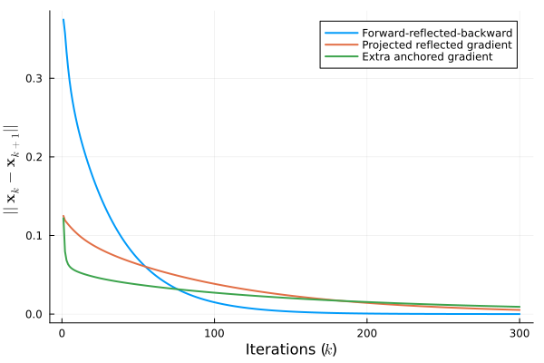

Markov Decision Process
A stationary discrete Markov Decision Process (MDP) is characterized by the tuple $(\mathcal{X},\mathcal{A},\mathbb{P},r,\gamma)$, where
- $\mathcal{X}$ is the (finite countable) set of states;
- $\mathcal{A}$ is the (finite countable) set of actions;
- $P : \mathcal{X} \times \mathcal{A} \times \mathcal{X} \to [0,1]$ is the transition probability function, such that $P(x,a,x^+)$ is the probability of ending up in state $x^+ \in \mathcal{S}$ from state $x \in \mathcal{X}$ when taking action $a \in \mathcal{A}$;
- $r : \mathcal{X} \times \mathcal{X} \to \mathbb{R}$ is the reward function, so that $r(x,x^+)$ returns the reward for
transitioning from state $x \in \mathcal{X}$ to state $x^+ \in \mathcal{X}$;
- $\gamma \in \mathbb{R}_{> 0}$ is a discount factor [5].
The aim is to find a policy, i.e., a function $\pi : \mathcal{S} \to \mathcal{A}$, returning the best action for any given state. A solution concept for MDP is the value function, $v^{\pi} : \mathcal{S} \to \mathbb{R}$, defined as
\[\begin{equation} v^{\pi}(x) = \overbrace{\sum_{x^+ \in \mathcal{X}} P(x,\pi(x),x^+) \left( r(x,x^+) + \gamma v(x^+) \right)}^{=:\mathsf{T}(v^{\pi})} \end{equation}\]
returning the "goodness" of policy $\pi$. The expression in $(1)$ is known as Bellman equation, and can be expressed as an operator of $v^{\pi}$, i.e., $\mathsf{T}[v^\pi(s)] =: \mathsf{T}(v^{\pi})$. It can be shown that the value function yielded by the optimal policy, $v^*$, results from the fixed-point problem $v^* = \mathsf{T}(v^*)$. Therefore, the latter can be formulated as a canonical VI, with $F = \mathsf{I} - \mathsf{T}$.
Let's start by defining the problem data
using Random, LinearAlgebra
using Monviso, JuMP, Clarabel, Tullio
Random.seed!(2024)
# Number of states and actions, discount factor
num_X, num_A = 20, 10
γ = 0.8
# Transition probabilities and reward
P = let p = rand(num_X, num_A, num_X); p ./ sum(p; dims=3); end
R = rand(num_X, num_X)Let's define the Bellman operator (as fixed point), the VI mapping, and the initial solution
# Bellman operator
T(v) = maximum(@tullio [i,j] := P[i,j,k] * (R[i,k] + γ * v[k]); dims=2)
F(x) = x .- T(x)
# VI
model = Model(Clarabel.Optimizer)
set_silent(model)
@variable(model, y[1:num_X])
vi = VI(F; y=y, model=model)
x0 = rand(num_X)As examples, we can use the forward-reflected-backward (Monviso.frb), the projected reflected gradient (Monviso.prg), and the extra anchored gradient (Monviso.eag).
max_iter = 300
step_size = 0.05
residuals = (
frb = Vector{Float32}(undef, max_iter),
prg = Vector{Float32}(undef, max_iter),
eag = Vector{Float32}(undef, max_iter)
)
# Copy the same initial solution for the three methods
let sol_frb = (xk = x0, x1k = x0),
sol_prg = (xk = x0, x1k = x0),
sol_eag = (xk = x0,)
for k in 1:max_iter
# Forward-reflected-backward
xk1 = frb(vi, sol_frb..., step_size)
residuals.frb[k] = norm(xk1 - sol_frb.xk)
sol_frb = (xk = xk1, x1k = sol_frb.xk)
# Projected reflected gradient
xk1 = prg(vi, sol_prg..., step_size)
residuals.prg[k] = norm(xk1 - sol_prg.xk)
sol_prg = (xk = xk1, x1k = sol_prg.xk)
# Extra anchored gradient
xk1 = eag(vi, sol_eag..., x0, k, step_size)
residuals.eag[k] = norm(xk1 - sol_eag.xk)
sol_eag = (xk = xk1,)
end
endThe API docs have some detail on the convention for naming iterative steps. Let's check out the residuals for each method.
using Plots, LaTeXStrings
plot(
1:max_iter, [residuals.frb, residuals.prg, residuals.eag];
xlabel=L"Iterations ($k$)",
ylabel=L"$||\mathbf{x}_k - \mathbf{x}_{k+1}||$",
labels=[
"Forward-reflected-backward"
"Projected reflected gradient"
"Extra anchored gradient"
] |> permutedims,
linewidth=2
)